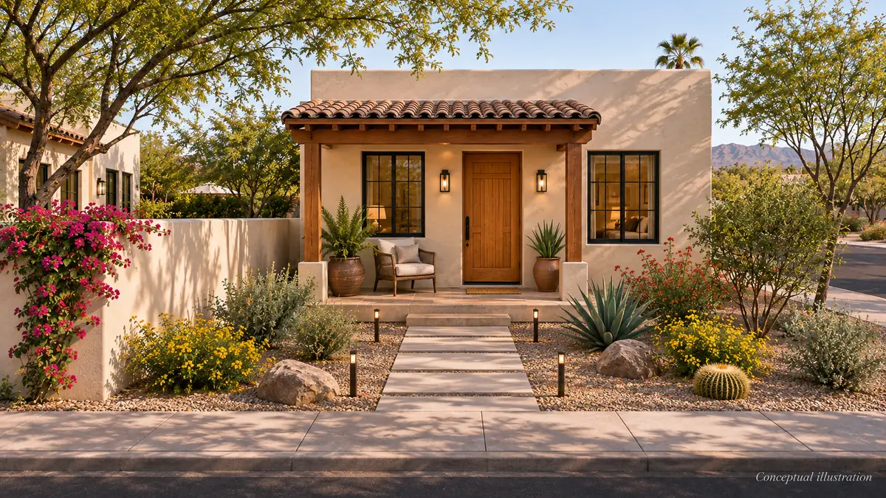
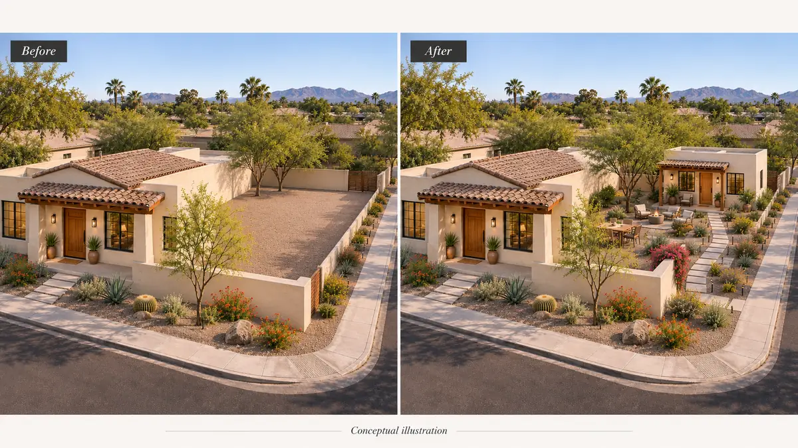
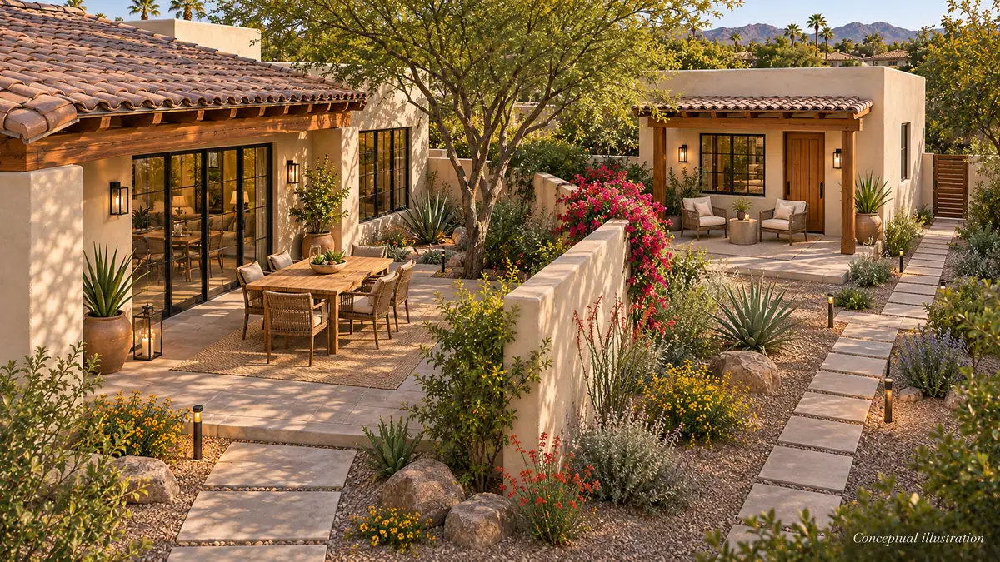
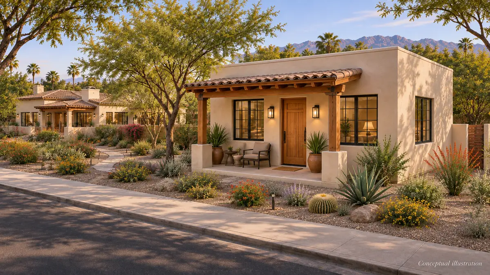

In most cases, yes. Arizona's ADU statute requires larger cities to allow a detached ADU on any lot where a single-family home is allowed, with a few exceptions such as land near certain airports. A corner lot adds something an interior lot doesn't have: a second street, which gives you a natural place for a separate entrance. What decides whether it works is the setbacks, the easements, and how the lot handles the corner itself — so those get checked before anything is drawn.
A quick note on terms. People say ADU, casita, guest house, and mother-in-law suite for the same idea, but the city is stricter. Phoenix defines an ADU as a unit with its own kitchen, bathroom, living area, and sleeping quarters. A guest house without a kitchen may not count as an ADU, and that changes which rules apply. This article is about the self-contained kind.
A second street can give the ADU its own front door
On an interior lot, the main house and the ADU usually share one driveway and one front yard. Everyone comes and goes past the same windows. On a corner lot, the ADU can face the side street instead, so a tenant, a parent, or a guest reaches it without crossing the main house's yard.

When the two entrances face different streets, you can also place patios and windows so the two homes aren't looking into each other, and a fence or planting bed can mark where one yard ends. The side-street wall will be seen by everyone walking or driving past, so it needs a real door, windows, and some detail.
Matching the main house's stucco and roof is a design choice that tends to look right on a corner — but it is your choice, not the city's. Under A.R.S. 9-461.18, a covered municipality may not "require that an accessory dwelling unit match the exterior design, roof pitch or finishing materials" of the main dwelling.
What Phoenix publishes for detached ADU setbacks
Many homeowners assume the street side of a corner lot carries a deep, front-yard-style setback. For a detached ADU, the City of Phoenix's Beginner's Guide to ADUs says a detached unit may be located no closer than:
| From | Minimum |
|---|---|
| A street side property line | 5 feet |
| An interior property line | 3 feet |
| A property line abutting a fully dedicated alley | 0 feet |
| Height, within the required rear yard | 15 feet, unless a use permit is obtained |
The ADU still has to meet the lot's coverage requirements, and the guide doesn't spell out front-yard placement for detached units, so confirm that one with the city for your address.
State law sits behind this, and there's a wrinkle worth knowing on a corner. A.R.S. 9-461.18 bars a covered city from setting rear or side setbacks for an ADU more than five feet from the property line. It says nothing about street side setbacks or corner lots specifically — that's left to the city, which is exactly why Phoenix publishes a separate street-side number. The statute also bars setbacks more restrictive than those for single-family homes in the same zoning area.
Mesa, Gilbert, Scottsdale and Tempe each have their own zoning code, so don't carry the Phoenix numbers across a city line. We keep a plain-English breakdown of casita and ADU rules by city if you want to compare.

A wider side yard may take a compact ADU and leave more of the backyard open. Whether yours does depends on the usable width and depth left after setbacks, easements, and clearances between buildings. A 600 square foot ADU can be a 20 by 30 foot rectangle — but that rectangle still has to fit between the setback lines and the house, with room for an entry path.
A second driveway is an option, not a requirement
Arizona's statute says a city can't require extra parking on a lot to accommodate an ADU, so ADU parking is something you choose to add rather than something you owe. The side street is the usual place to put it on a corner lot.
In Phoenix, a driveway has to be built to city standards under a permit from the Planning & Development Department, and the city's parking guideline says driveways on a single-family corner lot should sit at least 4 feet from the curb radius return and as far from the intersection as practical. Check the current dimensions for your address, since that guideline has been through revisions.
A garage or carport conversion works differently. Phoenix's guide is explicit that converting one means establishing equivalent parking elsewhere on the lot — and not in the front setback area.
Sight triangles at the corner
Corners carry clear-vision areas so drivers can see around them. In Phoenix, the parking guideline calls for visibility triangles at driveway entrances, alleys, and intersecting streets, with nothing over 36 inches tall inside them and tree canopies kept high; it shows 33 by 33 feet for local streets. Mesa's resident handout describes an 80-foot triangle on local streets that also applies to fences, walls, and signs, with shrubs at 30 inches or less.
On a corner lot this can limit where a carport, a tall fence, or the ADU itself sits relative to the intersection. These dimensions vary by city and get revised, so confirm the current ones for your address before you design around them.

Family, long-term tenants, and short-term rentals
For a parent or adult child, a separate entrance and their own outdoor space make daily life easier for both households. For a tenant, the same layout reads more like a small house than a unit behind someone else's home.
The rules differ by use. Arizona's statute protects renting an ADU as long-term rental housing, which it defines as a lease of ninety days or longer, or month-to-month. Short-term rentals fall under separate city rules — Phoenix's ADU guide states that ADUs are allowed to be used as short-term rentals and points to the city's short-term rental page for the requirements. Confirm what applies to your intended use before planning around it.
HOAs, easements, and what's on the ground
If the property is in an HOA, read its recorded restrictions and architectural approval process early. The state statute limits what cities can require; it does not reach private covenants. Your CC&Rs can still say no after the city has approved your permit.
Easements, street trees, utility locations, drainage, and fire access can each change where the building fits. A survey shows boundaries and recorded easements, and the zoning review establishes the setbacks — so a corner lot needs both.

How we check a corner lot
Before anything gets drawn, we pull the city's ADU rules for the jurisdiction and run the size, setback, and lot coverage numbers for the specific address. Then we look at the street-side line, the corner conditions, and where an entrance and path would actually land.
As a conceptual example — not a SOKO project — picture a corner lot where the main house sits toward the front street, with a side yard running along the second street. In Phoenix, a detached ADU there could sit 5 feet back from that street-side line, per the city's published guide. The first question is how much width and depth that leaves once the house, any easements, and the entry path are accounted for.
Questions to ask about your lot
- Which property line does the city treat as the street side, and which as the front?
- Could the entrance face the side street without crossing the main house's yard?
- How wide and deep is the buildable area once setbacks and easements are drawn?
- Do you want a second driveway, and does the corner leave room for one?
- Where do the sight triangles fall, and what is inside them now?
- Does an HOA apply, and what does it say about street-facing buildings?
Have a corner lot? Let's see what fits on it.
Bring the address and we'll run the setbacks, lot coverage and corner conditions for your specific property — and tell you straight if it doesn't work.
Sources: A.R.S. 9-461.18 (accessory dwelling units — setback cap, parking, exterior design, long-term rental definition, exclusions); City of Phoenix Beginner's Guide to Accessory Dwelling Units (detached ADU setbacks, height, lot coverage, garage conversion parking, short-term rental); City of Phoenix ADU page; Phoenix Zoning Ordinance Section 706.A; City of Phoenix off-street parking guideline and City of Mesa sight visibility handout for the visibility triangle figures. A.R.S. 9-461.18 applies to municipalities with a population over 75,000. Driveway and visibility-triangle dimensions are from guideline documents that are periodically revised — confirm the current figures with the jurisdiction for your address. Codes, ordinances and city guidance change; nothing here is a zoning determination for a specific property.